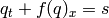

Base class.
Instance variables:
- trace - trace level
- debug - debug information (dictionary)
Methods that should be overridden:
- allocate - allocate memory etc
- pre_run - pre run initialisation
Abstract system.
Define initial conditions, abstract mass, and other parameters.
Instance variables:
- p - number of unknowns
- parameters - parameters (dictionary)
Instrance variables pulled from elsewhere:
- grid - pyblaw.grid.Grid
Methods that should be overridden:
- allocate - allocate memory
- initial_conditions - set initial condtions at time t
- mass - compute ‘mass’ of system
Simple system.
XXX
Arguments:
- q0 - initial condition (callable)
- parameters - parameters (dictionary)
The initial condition function is called as q0(x, t), and should return a vector.
The first component of the solution is taken to be the ‘mass’ of the system.
Abstract flux.
Compute the net flux for each cell given the cell averages q.
Instance variables pulled from elsewhere:
- grid - pyblaw.grid.Grid
- system - pyblaw.system.System
- reconstructor - pyblaw.system.Reconstructor
Methods that should be overridden:
- allocate - allocate memory etc
- flux - compute net fluxes
Simple numerical flux.
This flux uses a user supplied numerical flux.
Arguments:
- flux - flux function (callable)
The flux function is called as flux(qm, qp, dx, f).
Implementing the flux function in Cython (or similar) is strongly recommended.
Lax-Friedrichs flux.
This flux uses the Lax-Friedrichs numerical flux associated with the flux f, and is implemented in C (clfflux).
Arguments:
- flux - flux function (callable)
- alpha - XXX
- virtual - number of virtual cells on each side of the domain
The flux function f is called as f(q, f) where q is a NumPy XXX
Implementing the flux f in Cython is strongly recommended.
Abstract source.
Compute the source for each cell given the cell averages q.
Instance variables pulled from elsewhere:
- grid - pyblaw.grid.Grid
- system - pyblaw.system.System
- reconstructor - pyblaw.reconstructor.Reconstructor
Methods that should be overridden:
- allocate - allocate memory etc
- source - compute sources
Simple numerical source.
This source uses a user supplied numerical source.
Arguments:
- source - source function (callable)
The source function is called as source(qm, qp, qq, dx, s).
Implementing the source function in Cython (or similar) is strongly recommended.
Abstract reconstructor.
Given the cell averages q, reconstruct the unkown at various points.
Instance variables:
- n - number of quadrature points per cell (for source)
Instance variables pulled from elsewhere:
- grid - pyblaw.grid.Grid
- system - pyblaw.system.System
Methods that should be overridden:
- allocate - allocate memory etc
- reconstruct - reconstruct
WENO CLAW Reconstructor.
XXX: WENO is loaded from a cache
The flux tuple contains the components that should be reconstructed at the left and right side of each cell.
The source tuple contains the XXX
Abstract evolver (time-stepper).
Evolve the cell averages q given at time t^n to time t^{n+1}.
Instance variables:
- t - times (time grid)
- dt - time step sizes
- grid - pyblaw.grid.Grid
- system - pyblaw.system.System
- reconstructor - pyblaw.reconstructor.Reconstructor
- flux - pyblaw.flux.Flux
- source - pyblaw.grid.Source
Methods that should be overridden:
- allocate - allocates memory etc
- evolve - evolve q
Abstract dumper.
Dump the cell averages q to a file.
Instance variables:
- x - cell centers
- t - times
Methods that should be overridden:
- init_dump - init and create dump file etc
- dump - dump solution q
MAT dumper (using SciPy).
Dump the cell averages q to a MAT file. The matrices created within the MAT file are:
- dims.xdim - cell centres
- dims.tdim - dump times
- parameters.X - parameters
- data.q - cell averages of solution q
The parameters are taken from the system (pyblaw.system.System).
The H5Dumper in pyblaw.h5dumper is more efficient.
Arguments:
- output - output file name
Solver for 1D systems of balance laws.
Numerically approximates the solution of a system of hyperbolic balances laws of the form
.
The PyBLAW System, Flux, Source, and Evolver classes should be extended to define the system, compute the flux, compute the source terms, and evolve the system.
The constructor takes care of connecting the PyBLAW classes that you have extended (as mentioned in the previous paragraph) and calling their allocate methods.
Keyword arguments:
- grid - pyblaw.grid.Grid
- system - pyblaw.system.System
- reconstructor - pyblaw.system.Reconstructor
- flux - pyblaw.flux.Flux
- source - pyblaw.source.Source
- evolver - pyblaw.evolver.Evolver
- dumper - pyblaw.dumper.Dumper
- dump_times - dump times
- times - times
Instance variables:
- t - times
- dt - time steps
- t_dump - dump times
- trace - trace level
Instance variables pulled from elsewhere:
- N - number of cells
- x - cell boundaries
- dx - cell sizes
- p - number of unknowns
Run the solver.
This method runs the solver. First, it allocates the cell averages q and sets the initial condtions defined by system.initial_conditions. Next, it calls the pre run hooks pre_run (last minute initialisations). Finally, it cycles throuth the times and evolves the system using the evolver, dumping the cell averages at dump_times using the dumper.
WENO conservation law solver using a Lax-Friedrichs flux.
XXX